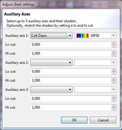
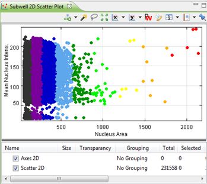

Auxiliary axes are axes that can visualize an additional dimension of data (i.e. an additional feature) using the chart colors. Using this method, you can for example plot 3 features in a 2D scatter plot: an X feature, an Y feature and a feature on the auxiliary axis.
To enable auxiliary axes, go to the layer where you wish to add the auxilialy axes and click on Activate color axes: 
A dialog will appear where you can configure up to 3 auxiliary axes:

For each auxiliary axis you can define a feature and a shader. Every value of the feature will be translated to a color from the selected shader. If you select more than one auxiliary axis, it is advised to use the Red, Green, en Blue Shaders. This will result in a mixture of rgb colors. Other combinations may be harder to distinguish.
The lo and hi cut that you can select for each activated auxiliary axis make up the window of data that will be used to define the colors that are used from the shader. For example, when you select a lo cut of 0.1, all data under 10% of the data will be given the lowest color of the shader. If you select a hi cut of 0.9, the 10% of the highest values will be given the highest color value available in the shader.
Here is an example of a chart with an auxiliary axis. The auxiliary feature is Cell Diameter (as seen in the dialog image above):
